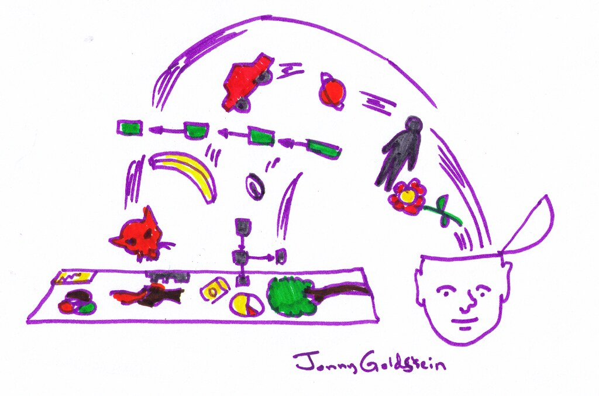

Team Management Brain Dump

I’m receiving another team to manage directly, which is good news! But it also means I’ll have a lot on my table. I wrote down this list of things that support efficient work for myself to follow:
-
Single “in progress” task - make sure each team member is working on a single task at each given point in time to avoid confusion and context switch overhead. If a task is stuck, it goes to the “blocked” queue so it’ll be clear that we have a problem.
-
Clear bottlenecks - building on the above point, part of the reason for constant context switching is tasks being stuck due to reasons the developer doesn’t control. Avoid this by planning in advance and sharing with the other teams. Be rigorous about this.
-
Clean backlog - have 1-3 ready tasks in the backlog to consume if stuck, allows not to have to ask the manager for priority. Have a backlog grooming meeting every 2 weeks to keep the tasks in check.
-
On-call rotation - make sure to have the on-call person deal with all interrupts the team receives from external resources. All support requests should be directed to the on-call channel. This makes interaction over support work more visible and allows for the other team members context-switching-free time.
-
Async updates - make sure all team members update progress on cards. This creates a history of the task and prevents me from checking in to know the status.
-
Domain responsibilities - define team domains and then split their ownership between team members. Doing so develops expertise and ownership of a domain, and provides a focal point for the team. It’s good to rotate responsibilities every once so often to refresh and challenge team members.
-
Incidents retrospectives - a pillar in team building. Setting the right tone in these meetings allows for a safe place for the team to come together and think about how to improve. It helps define the team culture and fix systematic issues with architecture and processes.
-
Fixing organizational issues - finding where the team struggles when working with the rest of the organization. Advocating to resolve these issues as they come up and not letting them slide.
-
Technical deep dives - it’s important to monitor and understand the technical work being done to help come up with ideas and to avoid missing potential critical issues. Promoting written discussions on technical issues is efficient since it requires the person leading it to gather data and analyze the issue instead of using you as a rubber duck.
-
Rigorous schedule - people like to set meetings, make sure they are actually needed. Try to divert the meeting to a written discussion. Works well for simple things that don’t require deep discussions (and there are many of those). I also like the notion of setting meetings only after a document has been created and shared and that the focus of the meeting is a discussion about its content (and not on presenting it).
-
Repeating team-building meetings -
- Daily - updates, priorities, and notifications.
- Weekly - accomplishments, long term goals, backlog cleanup.
- 1on1s - 1 hour time for each team member to update on personal and work-related issues. Also good for building personal relationships.
-
Project management -
- Define stakeholders
- Prepare a road-map with milestones and other team dependencies
- Set a weekly sync meeting with stakeholders to review and update the roadmap
- Gather clear requirements
- Prepare design doc
- Review design and roadmap with team, stakeholders, and management
-
Releases -
- Appoint a release manager
- Tickets to be released are tagged “release”
- Each release has a doc containing planned changes
- In the weekly meeting the release tickets are reviewed